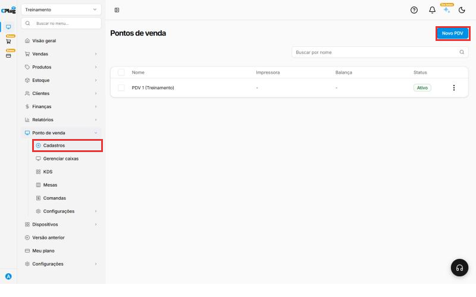
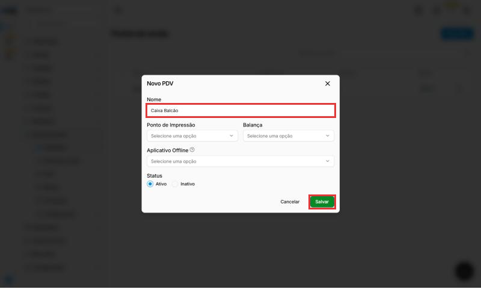
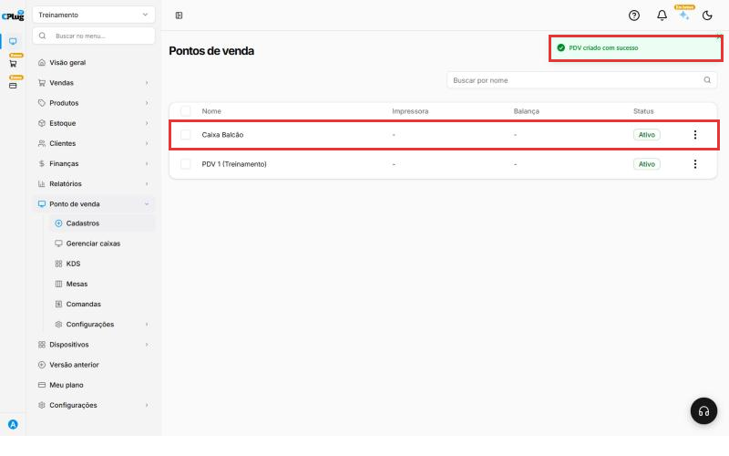
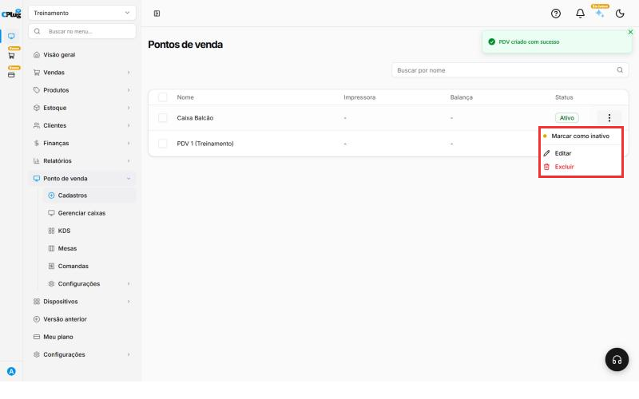
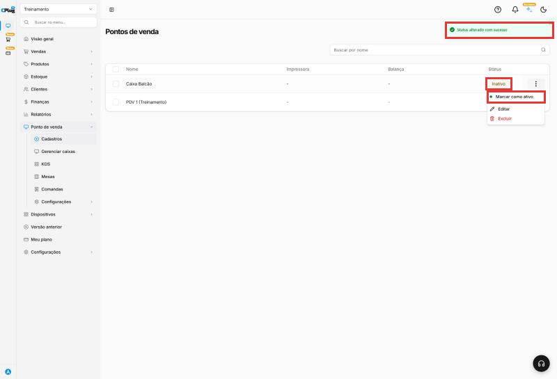

Como cadastrar um ponto de venda
O ponto de venda (PDV) é cada caixa da loja, o lugar onde as vendas são registradas. Se a loja tem um caixa no balcão e outro no salão, cadastre um PDV para cada um. Exemplo: "Caixa Balcão" e "Caixa Salão".
Com um PDV para cada caixa, você sabe de onde saiu cada venda e confere o fechamento de cada um separado.
Entenda o conceito
O cadastro do PDV junta três coisas que formam um "caixa" de verdade:
| Peça | O que é | Onde aparece |
|---|---|---|
| O PDV | O caixa, com nome e status. | Na abertura e no fechamento de caixa. |
| A gaveta | Uma conta do tipo Conta PDV, criada sozinha com o mesmo nome. É para onde vai o dinheiro das vendas desse caixa. | Finanças → Contas bancárias (veja Como cadastrar uma conta bancária). |
| Os aparelhos | A impressora e a balança ligadas a esse caixa. | Vêm de Configurações → Periféricos. |
PDV × configurações do PDV: o cadastro diz quais caixas existem. Como eles funcionam (taxa de serviço, senhas, fechamento, delivery) é definido uma vez para todos em Como configurar o terminal de vendas.
Antes de começar
A loja já vem com um ponto de venda cadastrado. Confira a lista antes de criar outro: talvez você só precise trocar o nome dele.
Se o caixa vai imprimir pedidos ou usar balança, cadastre antes esses aparelhos em Configurações → Periféricos. Só os aparelhos cadastrados lá aparecem como opção no cadastro do PDV.
Nos prints, o quadrado vermelho mostra onde você deve clicar ou digitar.
Abra a tela de pontos de venda
No menu do lado esquerdo, clique em Ponto de venda e depois em Cadastros. A lista mostra cada PDV com a impressora, a balança e o status.
Clique em Novo PDV, no canto de cima, à direita.

Preencha os dados do PDV
Abre a janela Novo PDV:
- Nome: um nome fácil de reconhecer no dia a dia. Exemplo: "Caixa Balcão".
- Ponto de Impressão: a impressora em que esse caixa imprime. A lista mostra as impressoras de Configurações → Periféricos. Se aparecer "Nenhum resultado encontrado", ainda não há impressora cadastrada. Pode deixar em branco e escolher depois.
- Balança: a balança ligada a esse caixa, se houver. Também vem de Periféricos. Pode deixar em branco.
- Aplicativo Offline: só preencha se o caixa vai usar o PDV 2.0 ou o PDV Móvel. A lista mostra os computadores servidores cadastrados em Dispositivos → Terminais & Dispositivos (por exemplo, Servidor Padrão). Ao escolher um, o PDV só pode ser aberto nesse aplicativo. Se não usa esses aplicativos, deixe em branco.
- Status: deixe em Ativo para o caixa poder ser usado.

Salve o PDV
Clique em Salvar. Aparece a mensagem PDV criado com sucesso, e o novo caixa entra na lista com o status Ativo.
O sistema também cria sozinho uma conta com o mesmo nome do PDV em Finanças → Contas bancárias, do tipo Conta PDV e com saldo R$ 0,00. Exemplo: a conta "Caixa Balcão". Ela aparece, por exemplo, na lista de contas da transferência automática do fechamento de caixa.

Conheça as opções do PDV
Nos três pontinhos no fim da linha do PDV você tem:
- Marcar como inativo: o sistema pergunta "Deseja alterar o status para inativo?". Clique em OK. Aparece Status alterado com sucesso, e o PDV fica Inativo na lista, sem apagar o cadastro. Para voltar, use Marcar como ativo no mesmo menu.
- Editar: abre a janela Editar PDV, com os mesmos campos do cadastro: nome, impressora, balança, aplicativo offline e status.
- Excluir: apaga o PDV.


Pronto! O novo ponto de venda já aparece na lista de pontos de venda.
Boas práticas
- Um PDV para cada caixa físico: assim cada fechamento é conferido separado.
- Nomes pelo lugar ("Caixa Balcão", "Caixa Salão"), não pelo operador: o operador muda, o caixa fica.
- Inative em vez de excluir um caixa que parou de ser usado, para manter o histórico das vendas.
- Cadastre os periféricos antes (impressora e balança) para já ligá-los ao caixa.
- Confira a conta PDV em Contas bancárias: é ela que mostra o dinheiro de cada caixa.
Deu algum problema?
A lista de Ponto de Impressão está vazia
Nenhuma impressora foi cadastrada ainda. Salve o PDV sem impressora. Depois de cadastrar a impressora em Configurações → Periféricos, abra o PDV pelos três pontinhos, clique em Editar e escolha a impressora.
Não sei o que escolher em Aplicativo Offline
Se o caixa não usa o PDV 2.0 nem o PDV Móvel, deixe em branco. Se usa, escolha o computador servidor da loja. Na dúvida, fale com o suporte.
Prefiro desativar o caixa em vez de excluir
Use Marcar como inativo. O PDV continua cadastrado e pode ser reativado com Marcar como ativo.
Apareceu uma conta nova em Contas bancárias
É normal: cada PDV ganha uma conta com o mesmo nome, do tipo Conta PDV.
Relacionados: Como configurar o terminal de vendas · Como cadastrar uma conta bancária · Como definir o tipo de nota emitida no PDV
ponto de venda pdv caixa novo pdv cadastrar caixa caixa balcão impressora ponto de impressão balança periféricos aplicativo offline pdv 2.0 pdv móvel servidor padrão computador servidor conta pdv ativo inativo marcar como ativo editar excluir